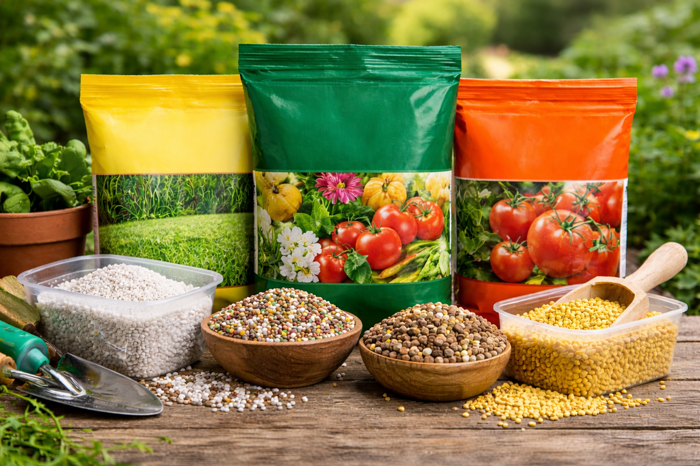

Kapalná hnojiva
Praktické řešení pro snadnou aplikaci a rychlé doplnění živin během vegetace.
Nabízíme hnojiva pro běžné i specializované použití v zahradě, skleníku i při pěstování v nádobách. V sortimentu najdete anorganická i organická hnojiva, krátkodobě i dlouhodobě působící varianty, stejně jako kapalné, práškové a granulované formy.

V nabídce máme anorganická hnojiva pro rychlé i postupné zásobení rostlin potřebnými živinami. Vybrat si můžete varianty s krátkodobým i dlouhodobým účinkem podle typu použití a nároků rostlin.

Praktické řešení pro snadnou aplikaci a rychlé doplnění živin během vegetace.

Vhodná pro přesné dávkování a využití při pravidelné péči o různé druhy rostlin.

Oblíbená forma pro pohodlnou aplikaci na záhony, do výsadeb i kolem stromů a keřů.
Organická hnojiva jsou vhodná pro přirozené doplnění živin a zlepšení půdních vlastností.